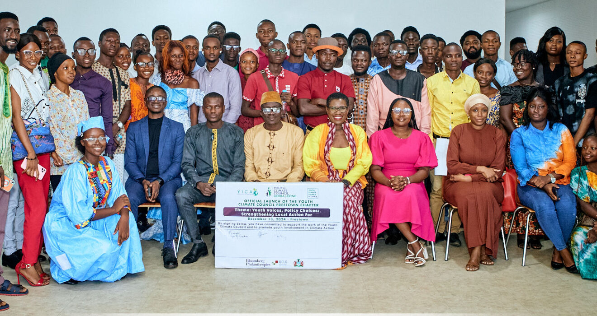
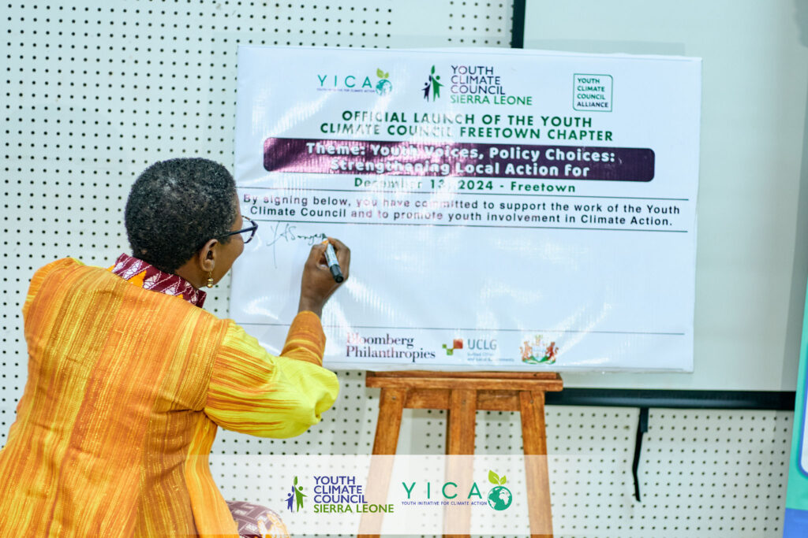

On Friday, December 13, 2024, the Youth Initiative for Climate Action (YICA-SL) proudly launched the Youth Climate Council Freetown Chapter at the Freetown City Council Hall.
This milestone marks the first local chapter of the Youth Climate Council Sierra Leone (YCC), a national initiative aimed at empowering and mobilising young people to take a central role in climate action and policy advocacy.
The launch event, themed "Youth Voices, Policy Choices: Strengthening Local Action for Freetown," brought together youth leaders, policymakers, and climate advocates to emphasise the importance of youth involvement in local climate initiatives.
In her keynote address, Mayor Yvonne Aki-Sawyerr, Co-Chair of C40 Cities, highlighted the urgency of addressing climate change, stating that it is not a distant threat but a reality that is already impacting lives. She specifically pointed to the challenges faced by the agricultural sector in Sierra Leone, with changing weather patterns and extreme rainfall affecting crop yields.
As the National Coordinator of the Youth Climate Council Sierra Leone, Foday Mark Kamara shared the journey that led to the establishment of the Freetown Chapter. Reflecting on the initial outreach to the Mayor over a year ago, he spoke about how the vision for the Freetown council evolved into a national movement.

Yatta Kallon, Head of the Climate Change Department at Freetown City Council, also addressed the audience, expressing the significance of the initiative as a beacon of hope for youth leadership in climate action. Through collaborations like the Bloomberg Youth Climate Action Fund, the Freetown City Council has been able to provide support to youth organisations, including YICA-SL, in their efforts to address these challenges.

The launch of the Freetown Chapter marks the beginning of a broader vision to strengthen grassroots involvement in climate action. The Youth Climate Council Sierra Leone aims to continue expanding its local chapters across the country, ensuring that young people everywhere have the opportunity to contribute to policy development and climate change mitigation.
YICA-SL remains committed to empowering the youth of Sierra Leone to lead the way in building a greener, more resilient future for all.